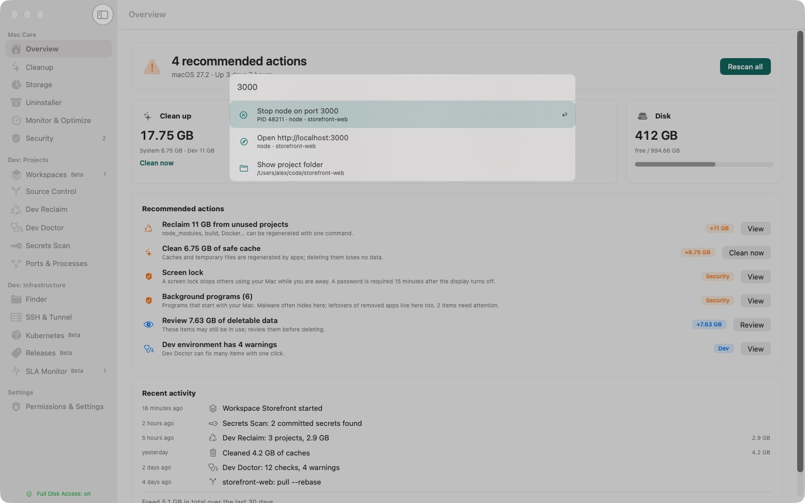
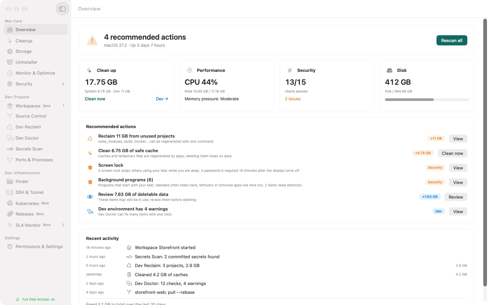
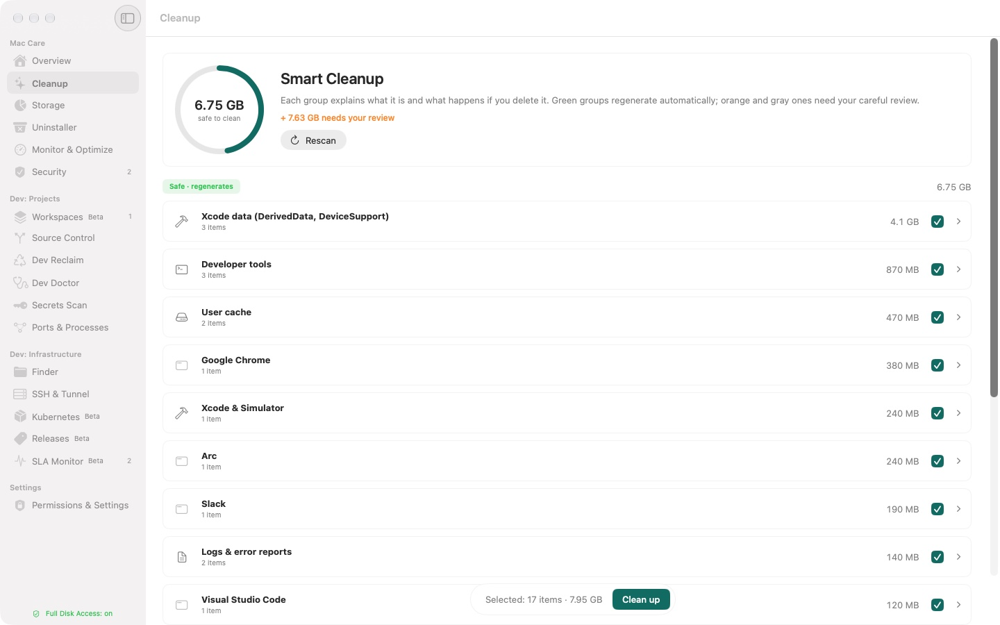
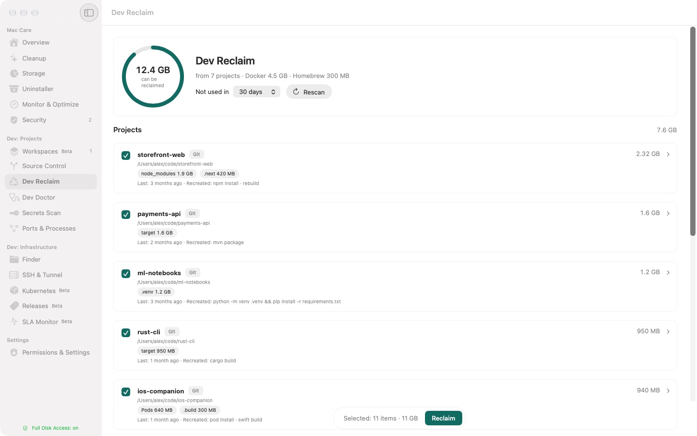
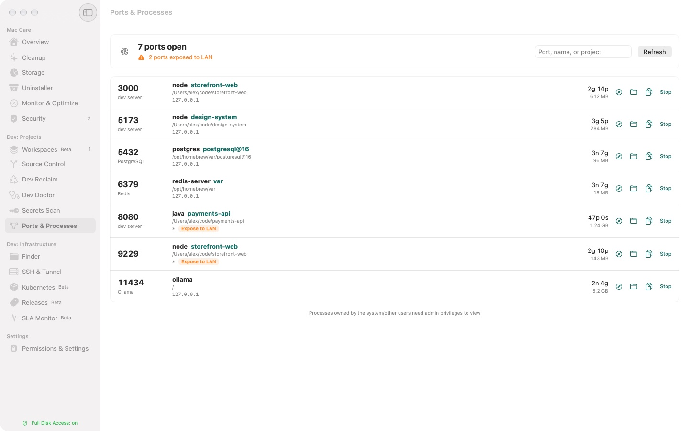
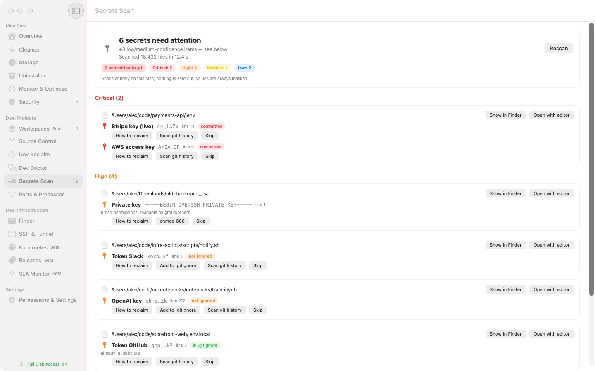
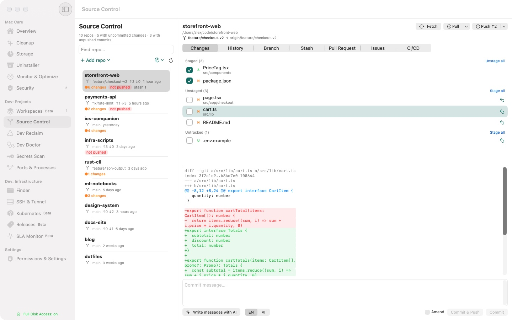
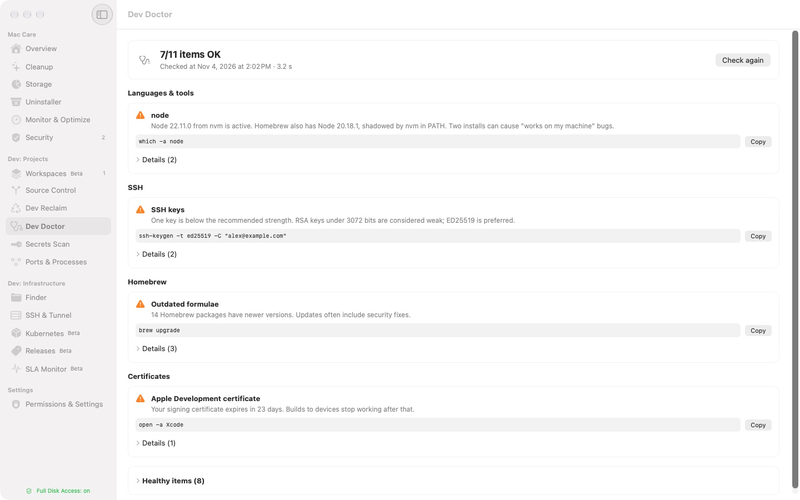
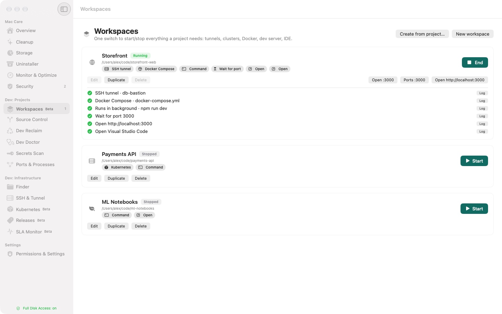

A calmer Mac for people who ship.
Clean caches and old build folders, see what holds a port, and find leaked keys. All on your Mac.

Free to use. 7-day Pro trial included. macOS 27 or later.
Everything in one window.








Built for the work you actually do.
Dev Reclaim
Removes node_modules, build folders and Docker leftovers from projects you stopped touching.
Ports & Processes
Shows what listens on each port and which project started it.
Secrets Scan
Finds API keys and private keys on disk, and flags the ones committed to git.
Source Control
Every repository on your Mac, with diffs, commits and branches in one place.
Dev Doctor
Checks your toolchains, PATH, git and SSH setup, and explains what to fix.
Command Palette
Press ⌥⌘K anywhere to free a port, open a project or connect over SSH.
Workspaces Beta
Start the tunnels, containers and dev server a project needs with one click.
Cleanup
Clears caches and logs that regenerate, and explains each one before it goes.
Careful by design.
- Runs entirely on your Mac. No analytics, no tracking.
- Shows a summary and asks for Touch ID before anything is deleted.
- Secret values stay masked and never leave the device.
Simple pricing.
Free
0 US$
- Scan everything
- Cleanup and Dev Reclaim up to 2 GB a day
- Local Git
- One workspace
- Command Palette navigation
Pro
29 US$once
Two Macs. One year of updates included.
- Unlimited cleanup and Dev Reclaim
- One-tap fixes
- AI commit messages on device
- Pull requests, issues and CI in the app
- Unlimited workspaces
Keep using your version forever. Renew updates for 15 US$ a year if you want them. Extra Mac: 9 US$.
Secure checkout with cards, PayPal or Apple Pay. 14-day money-back guarantee.
Ở Việt Nam: 390.000 ₫ qua chuyển khoản hoặc VietQR, liên hệ anduy0508@gmail.com.
Questions.
Is this a subscription?
No. Pro is a one-time purchase of 29 US$. You keep the version you bought forever, and the first year of updates is included.
What happens after the first year?
The app keeps working and nothing is locked. If you want new versions, you can renew updates for 15 US$ a year. It is optional.
Can I move my license to a new Mac?
Yes. One license covers two Macs. Deactivate one in the app, then activate the new one. A third Mac costs 9 US$.
What if my old Mac is lost?
Write to us and we will free that seat, so you can activate your replacement.
Does MacCleaner send my data anywhere?
No. It runs entirely on your Mac, including the AI that writes commit messages, with no analytics and no tracking. To check your license, the app sends only your license key to our licensing service.
Will it delete something important?
Not without you knowing. Each item is labelled by risk, running apps are protected, and every deletion shows a summary and asks for Touch ID first.
What do I need to run it?
macOS 27 or later and about 6 MB of disk space. The interface comes in English and Vietnamese.
How do I install it?
Download the DMG, drag MacCleaner into Applications, and open it. The first time, macOS asks you to confirm opening an app from the internet.